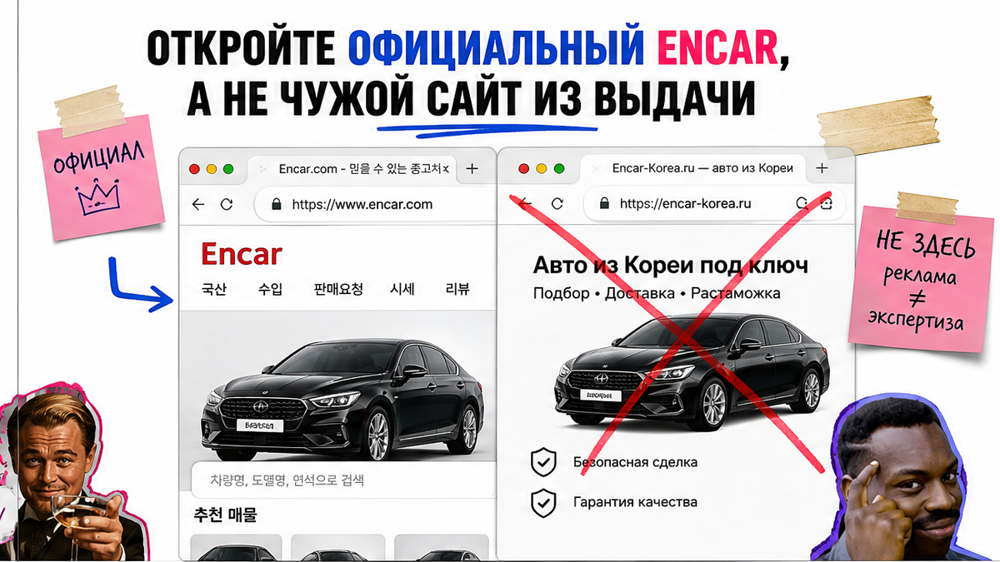
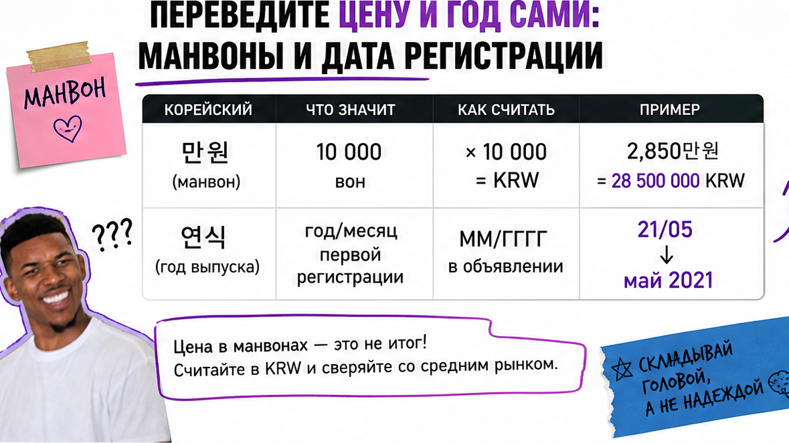
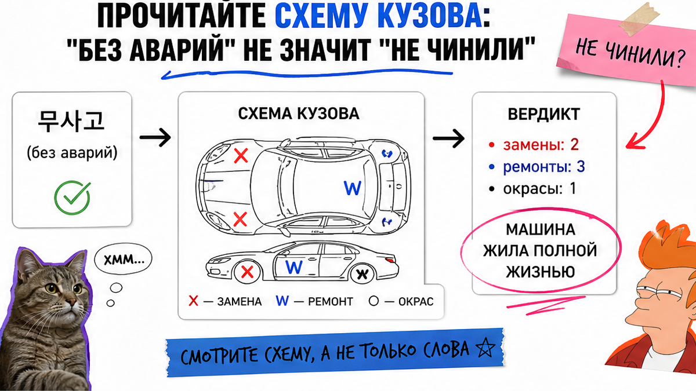

Дима из Новосибирска уже писал посреднику про предоплату за "идеальный" кроссовер с Encar: 28 тыс. км и пометка "без аварий". Переводчик браузера так и сказал. Знакомый вовремя ткнул пальцем: внизу мелко 렌트 이력 (история проката), на схеме кузова – W на заднем крыле. Боль простая – сайт на корейском, перевод кашей, а депозит просят уже сейчас. Ниже – как читать Encar на русском самому и за 10–15 минут решить: копать дальше, отложить или звать подборщика.
Короткий разбор: Официального полноценного русского encar.com нет – включайте перевод браузера на самом encar.com, а не на чужом сайте из выдачи. Цена в 만원 умножайте на 10 000. Пометка 무사고 ("без аварий") значит "не чинили силовой каркас", а не "идеал". X/W на схеме, прокат и расхождения пробега – стоп до любой предоплаты. Избегайте депозита, пока не проверите схему и страховую.
Мы в Авто-Сейлс во Владивостоке каждый день разбираем такие карточки для людей, которые впервые открыли корейский интерфейс. Цель не "узнать, что такое Encar", а один безопасный ритуал: открыл ссылку – заполнил таблицу – понял вердикт без депозита вслепую.
Сайты вроде encar-russia или trust-encar в поиске "encar на русском" часто оказываются посредниками. Это не замена чтению карточки на официальной площадке. Глубокая проверка Trust Encar и Carhistory до депозита – соседняя тема; здесь учимся читать объявление.

Первая ловушка новичка – искать кнопку "Русский" и кликать первый красивый сайт из выдачи. Полноценной русской версии encar.com нет. Есть экспортный раздел global.encar.com для партнёров, но это не ваш привычный RU-каталог объявлений.
Сделайте: откройте карточку на encar.com и включите перевод страницы в браузере. Не делайте: оставлять контакты и предоплату на первом сайте из поиска только потому, что там уже "всё по-русски". На практике переводчик путает термины – держите рядом мини-глоссарий из этого гайда, а не верьте каждой строке слепо.

В шапке сначала фиксируйте цифры, а не описание продавца. Цена почти всегда в 만원 (манвонах): 1 манвон = 10 000 вон. Если видите 1 850만원 – это 18 500 000 KRW. Скрин цены сохраняйте сразу: лоты обновляются, а спор "а сколько было" без скрина бессмысленен.
Год смотрите как дату регистрации (연식), часто вроде 21/05식 – май 2021. Рядом выпишите пробег в км, топливо, объём и коробку. Типичная ошибка – сравнивать лоты "на глаз" в манвонах без перевода в воны.
Сделайте: заметка "цена в вонах / год-месяц / пробег / топливо / объём". Не делайте: брать год только из свободного текста продавца. Проверьте цифры в шапке, не в описании.
| Поле в карточке | Как читать | Что записать себе |
|---|---|---|
| Цена (만원) | число × 10 000 = воны | сумма в KRW + скрин |
| Год / 연식 | месяц и год регистрации | 21/05 → май 2021 |
| Пробег | километры в объявлении | число + дата скрина |
| Топливо / объём / КПП | тип топлива, литры, коробка | сверка с вашим фильтром под ввоз |

Самый неприятный сюрприз Encar: 무사고 звучит как "без аварий", но корейская логика другая. Аварией часто считают ремонт силового каркаса. Двери, крылья, капот могут быть с метками ремонта при пометке "аварий нет". Именно так почти купил машину Дима: в шапке "чисто", на схеме – W на крыле.
Откройте лист техосмотра (성능점검 – схема состояния кузова). Ищите буквы: X – деталь меняли; W – правили или варили; C / A / U встречаются реже. X на двери и X на лонжероне – разный вес риска. Навесную иногда переживут, силовой каркас – уже "отложить" или звать человека, который читает схемы каждый день.
Сделайте: сначала схема, потом текст продавца. Не делайте: верить только строке перевода "без аварий" без просмотра X/W.
Красивый пробег 28–40 тыс. км сам по себе ничего не доказывает. Проскролльте назначение и особые отметки: 렌트 (прокат), 리스 (лизинг), 영업용 (коммерческое использование). Прокат часто прячется мелким шрифтом внизу – в реальном проекте люди читают только верх карточки.
Сверьте пробег в шапке, в листе техосмотра и в истории, если она есть. Расхождение – красный флаг. Описание продавца читайте последним: любое расхождение фото, цвета или пробега = стоп.
Сделайте: при намёке на прокат/лизинг сразу "отложить" до живого осмотра. Не делайте: бронировать по красивому пробегу и милому тексту в переводе. Избегайте брони "чтобы не ушёл лот".
Тотал, утопленник, угон – отказ. Крупные выплаты сверьте со схемой: если выплат много, а схема "как новая", задайте вопросы, а не переводите депозит. Пустая сводка не равна "идеал": на Carhistory прямо сказано, что ДТП без обращения в страховую могут не отображаться.
엔카진단 (диагностика Encar) проверяет рамные нормы и наличие опций, а не вечность каждой кнопки. Окно гарантии площадки заточено под покупку в Корее и не заменяет осмотр перед вывозом.
Сделайте: зафиксировать VIN, дату отчёта и список выплат. Не делайте: считать пустую страховую зелёным светом на предоплату.
Критерий результата: по любой ссылке с Encar вы заполняете таблицу "цена в вонах → смысл полей → флаги по схеме и страховой → вердикт: смотреть дальше / отложить / отдать подборщику" – и только потом думаете про деньги.
Схема чтения одной карточки:
Официальный encar.com + перевод → Шапка (цена/год/пробег) → Назначение (прокат/лизинг) → Схема X/W → Страховая сводка → Описание продавца последним → Вердикт без депозита
Чеклист красных флагов перед предоплатой:
Сделайте: закончить таблицу до разговора про предоплату. Не делайте: бронировать "чтобы не ушёл лот", пока флаги не закрыты. Используйте чеклист выше как ориентир.
Сами вы уже умеете отсеять явный мусор. Дальше имеет смысл звать людей, если на схеме спорные метки, язык мешает добить отчёты, продавец торопит с депозитом или лот нравится, но ошибаться на силовой зоне страшно.
Например, если после шагов выше остались флаги – не торгуйтесь с тревогой в одиночку. Актуальные варианты – в каталоге avto-sales125.ru, детали по ссылке Encar – в Telegram avtosales125. Форм на странице нет: сначала факты, потом деньги.
Сделайте: присылать ссылку и скрины шапки, схемы и страховой. Не делайте: переводить предоплату "потому что переводчик написал без аварий".
Материал проверен: Редакция Авто-Сейлс (эксперты по авто под заказ из Японии, Кореи и Китая).
Достоверность: факты сверены с материалами Encar Diagnosis, Carhistory (RU) и практикой заказов из Кореи на 2026-11-02; актуальные расчёты и подбор – в каталоге.
Полноценного русского encar.com нет. Откройте карточку на encar.com и включите перевод браузера. Сайты из выдачи чаще ведут к посредникам – сначала первоисточник, потом сервис подбора.
Умножьте число в 만원 на 10 000 – получите воны. Сохраните скрин шапки. Без перевода в воны не сравнивайте лоты и не обсуждайте предоплату.
Одной цифре в шапке не верьте. Сверьте объявление, лист техосмотра и историю; ищите отметки проката и лизинга. Расхождение – отложите лот до осмотра.
무사고 обычно про силовой каркас, а не про "ничего не красили". X – замена, W – правка/сварка. Метки на силовых зонах – стоп до вопросов специалисту.
Нельзя решать по пустой сводке. ДТП без страховой могут не отображаться. Соберите VIN, схему и страховую до любых денег.
Если после чеклиста остались флаги, нет VIN/свежих отчётов или продавец давит на предоплату – передайте ссылку и скрины в каталог или Telegram до перевода.